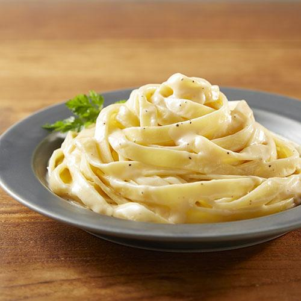

My Favorite Recipes
Creamy Pasta

This is my favorite pasta recipe. It is easy to cook and tastes really good.
Ingredients
- Pasta
- Butter
- Garlic
- Fresh Cream
- Cheese
- Salt
Steps
- Boil the pasta.
- Heat butter in a pan.
- Add garlic.
- Mix cream and cheese.
- Add pasta and cook for 2 minutes.
- Serve hot.
Cooking Terms
- Boil
- Cook food in hot water.
- Saute
- Cook with a little oil or butter.
- Garnish
- Decorate the food before serving.
Tip: Add more cheese if you like a creamy taste.